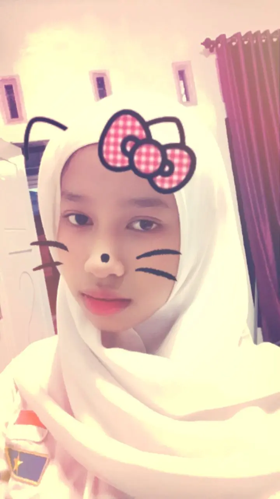
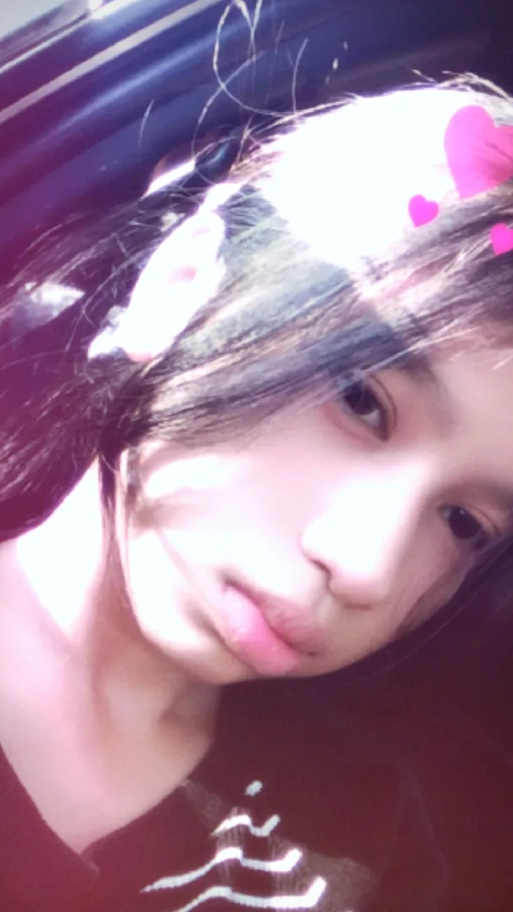
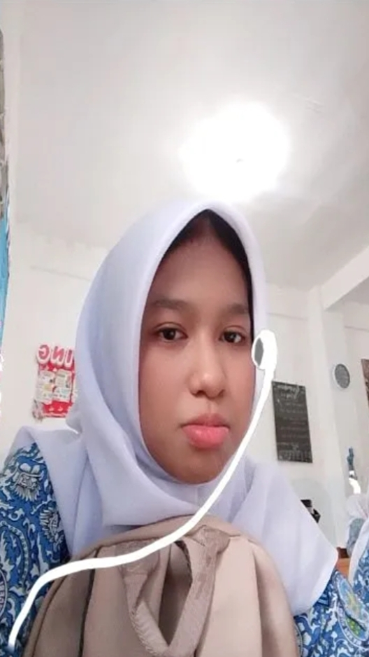
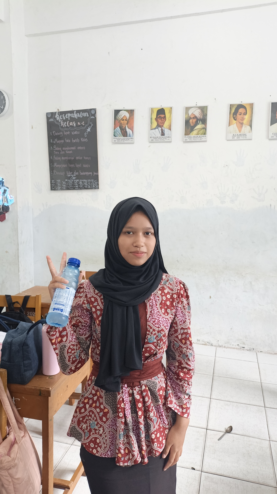

Hai, kamu! 🌷
Ada sesuatu yang sudah lama ingin kusampaikan. Nggak perlu buru-buru, baca saja sampai selesai, ya.
Dari: Bayu Abdi Pramana · Untuk: Adel Michel Aprilia
Hal sederhana yang kuingat 🌸
Ada hal-hal kecil tentang dirimu yang tanpa sadar membuat hariku terasa lebih menyenangkan. Cara kita ngobrol, bercanda, atau sekadar bertemu, semuanya jadi kenangan yang kusimpan baik-baik.
Aku nggak tahu apakah kamu menyadarinya, tapi mengenalmu adalah salah satu hal yang membuatku tersenyum belakangan ini.
Ganti dengan fotomu

Ganti dengan fotomu

Ganti dengan fotomu

halaman 1
Aku ingin jujur sama kamu 💗
Awalnya mungkin aku menganggap ini hanya rasa kagum biasa. Tapi lama-lama, aku sadar kalau aku ingin mengenalmu lebih dekat, mendengar lebih banyak ceritamu, dan menjadi seseorang yang bisa ikut membuatmu tersenyum.
Aku suka sama kamu. Aku menyampaikan ini bukan untuk membuatmu merasa harus membalas perasaanku, melainkan karena aku ingin jujur tentang apa yang kurasakan.
Ganti dengan fotomu
Ganti dengan fotomu

Ganti dengan fotomu

Maukah kamu memberiku kesempatan?
Kalau kamu juga ingin, aku ingin mencoba mengenalmu lebih dekat dan melihat ke mana cerita ini akan berjalan. Kita bisa menjalaninya pelan-pelan, tanpa tekanan.
Ganti dengan fotomu

Ganti dengan fotomu

Ganti dengan fotomu

Apa pun jawabanmu, terima kasih sudah membaca sampai akhir. Aku akan menghargai keputusanmu. 🤍